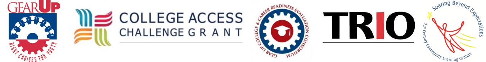

CoBro Consulting has provided evaluation services and data management systems primarily for GEAR UP programs, but also for other educational programs, such as Smaller Learning Communities, TRIO, and College Access Challenge Grants, since 2005.
The following represents a list of clients for whom CoBro Consulting currently provides, or has provided, evaluation and/or data management services since 2005.
| Program | Administering Institution |
| Amarillo College GEAR UP Program, TX | Amarillo College |
| Anaheim GEAR UP, CA | California State University, Fullerton |
| Bellflower GEAR UP, CA | Bellflower Unified School District |
| California Community College Academic Senate, CA | California Community Colleges |
| Catalina Island Outreach Grant, CA | Catalina Island Medical Center |
| CPSD Smaller Learning Communities Project, WA | Clover Park School District |
| CUNY Middle Grades Initiative/GEAR UP, NY | City University of New York |
| CSU Dominguez Hills GEAR UP, CA | California State University, Dominguez Hills |
| CSU-Fullerton GEAR UP, CA | California State University, Fullerton |
| DePaul TRIO, IL | DePaul University |
| East Texas GEAR UP, TX | Stephen F. Austin State University |
| Eastern Arizona College GEAR UP Program, AZ | Eastern Arizona College |
| Eastern Oklahoma State College GEAR UP, OK | Eastern Oklahoma State College |
| ENMU-Roswell GEAR UP, NM | Eastern New Mexico University, Roswell |
| Exagen Diagnostics, CA | Exagen Diagnostics |
| GEAR UP 4 LA, CA | Los Angeles Unified School District |
| GEAR UP Idaho, ID (2 programs) | Idaho State Department of Education |
| GEAR UP Tennessee, TN (2 programs) | Tennessee Higher Education Commission |
| Hennepin Technical College GEAR UP, MN | Hennepin Technical College |
| Imperial County TEAM GEAR UP, CA | Imperial County Office of Education |
| In Full Motion, TN | In Full Motion, Inc. |
| Iowa GEAR UP, IA | Iowa College Student Aid Commission |
| Kansas Kids GEAR UP, KS | Wichita State University |
| Kenai Peninsula GEAR UP, AK (2 programs) | Kenai Peninsula Borough School District |
| LAUSD GEAR UP South Gate Partnership, CA | Los Angeles Unified School District |
| LBUSD GEAR UP, CA | Long Beach Unified School District |
| Lorain GEAR UP, OH | Lorain City Schools |
| Lorain Project Grad GEAR UP, OH | Lorain City Schools |
| Lakes Smaller Learning Communities, WA | Clover Park School District |
| MiraCosta/Oceanside GEAR UP, CA | Mira Costa College |
| CWU MOSAIC2 GEAR UP, WA | Central Washington University |
| New Mexico GEAR UP State Program, NM | State of New Mexico Higher Ed Department |
| Okanogan Valley GEAR UP Program, WA | Central Washington University |
| Oklahoma GEAR UP, OK (2 programs) | Oklahoma State Regents for Higher Education |
| Palomar GEAR UP, CA (2 Programs) | Palomar Community College |
| Pasadena GEAR UP for Success, TX | Pasadena Independent School District |
| Pauma Valley GEAR UP, CA | University of California, San Diego |
| Project Lasso GEAR UP, CA | Los Angeles Unified School District |
| Project SOAR II, GEAR UP, CA | California State East Bay Foundation |
| Project STEPS GEAR UP, CA | Los Angeles Unified School District |
| RTI, International, NC | Research Triangle International |
| Riverside PassportPlus GEAR UP, CA | Riverside Community College District |
| Roosevelt GEAR UP, OR | Portland Public Schools |
| Rural Northern New Mexico GEAR UP, NM | New Mexico Highlands University |
| East Salinas GEAR UP, CA | Hartnell Community College District |
| Santa Ana GEAR UP, CA | Santa Ana Unified School District |
| SDSU Educational Opportunity Program, CA | California State University, San Diego |
| Seminole State College GEAR UP, OK | Seminole State College |
| South County Economic Development Council, CA | South County Economic Dev. Council |
| Southwestern Community College District, CA | Southwestern Community College District |
| Tennessee College Access Challenge Grant, TN | Tennessee Higher Education Commission |
| Tennessee Latino Student Success Initiative Grant, TN | Tennessee Higher Education Commission |
| TAMIU GEAR UP IV, TX | Texas A&M International University |
| Tucson GEAR UP, AZ | University of Arizona |
| Utah’s Statewide GEAR UP, UT (2 programs) | Utah Valley State College |
| Utica GEAR UP, NY | Mohawk Valley Community College |
| Wenatchee GEAR UP Program, WA | Wenatchee Public Schools |
| Wenatchee 21st Century Learning Center, WA | Wenatchee Public Schools |
| Wenatchee CACG | Wenatchee Public Schools |
| Yakima GEAR UP, WA | Yakima Valley Community College |
| Yale-Bridgeport GEAR UP, CT (2 programs) | The Consultation Center, Yale University |